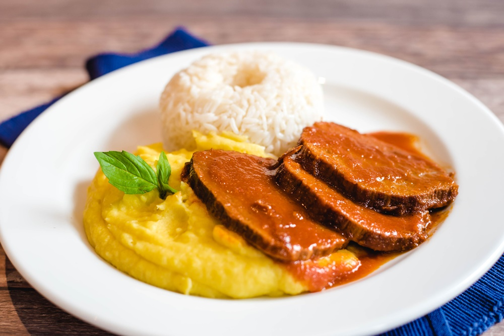

PURE

DESCRIPCION
En este artículo vas a aprender a hacer un puré de papas cremoso que se aleja un poco del puré de papa común. Presta atención a esta receta, pues siguiendo unos sencillos pasos descubrirás cómo elaborar uno de los acompañantes más deliciosos y versátiles de la cocina mundial.
INGREDIENTES
- 2 Libras Papas Peladas y cortadas en cubos
- Sal al gusto
- 1 Taza de Leche Evaporada Ideal®
- 3 Cucharadas de Mantequilla
PASOS
- Calentar agua con sal hasta que hierva. Colocar las papas y cocinar por 20 minutos o hasta que estén suaves. Escurrir
- Majar las papas agregando poco a poco la Leche Evaporada IDEAL y la mantequilla hasta obtener un puré cremoso.
- Servir y cubrir con un poco de cilantro cortado finamente.